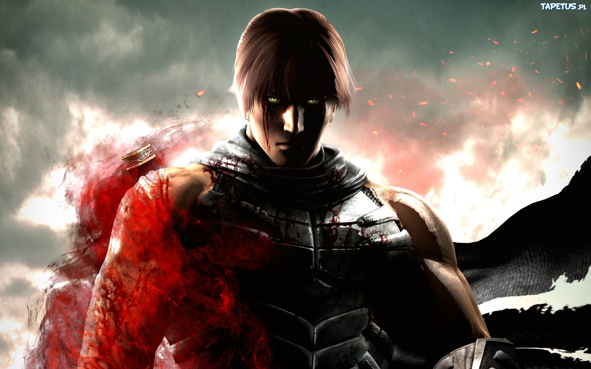

Ryu Hayabusa , de "super ninja", is de hoofdpersoon van Ninja Gaiden , [22] [23] en de enige speler controleerbare personage in het spel. Itagaki geloofde dat het creëren van extra speelbare personages zijn team zou afleiden van zich te concentreren op de ontwikkeling van Ryu's. [24] [25] Ryu heeft een lange geschiedenis met Tecmo; Hij was de ster van de jaren 1990 Ninja Gaiden -serie, en is een deel van de al DOA roster sinds 1996. Zijn rol in deze spelen een rol speelde in zijn populariteit onder de fans en de video game-industrie . [26] [27] Ninja Gaiden biedt een achtergrondverhaal aan het uiterlijk en karakter zoals gezien in de Ryu's Dead or Alive -serie, wordt ingesteld twee jaar voor de eerste DOA spel. [20] [26]
Rachel is de leidende vrouwelijke karakter en tragische heldin van het spel. Zij en haar tweelingzus, Alma , zijn getroffen met een bloed vloek die de mens verandert in duivels . [28] In de overtuiging dat er geen remedie voor hun conditie, Rachel wil Alma doden om de ziel van haar zus te verlossen. De relatie tussen de zusters en de Greater Fiend Doku , die hen vervloekt, dient als een complot apparaat om het spel naar voren te rijden, [29] met Rachel af en toe hoeft te worden gered door Ryu. Hoewel het niet een-speler gecontroleerde personage in Ninja Gaiden , in enkele delen van de Ninja Gaiden Sigma remake ze is controleerbaar. [5] Twee andere personages helpen de speler in het spel. Ayane , een jonge vrouwelijke ninja en een van de DOA regelmatige leden van de cast, fungeert als een gids gedurende Ninja Gaiden door het leveren van advies en doelstellingen naar de speler. Muramasa , een bladesmith , heeft winkels verspreid over de game wereld waar spelers kunnen kopen nuttige voorwerpen en upgrades voor wapens Ryu's. Muramasa geeft ook quests en betreft back-verhalen en andere cruciale informatie; bijvoorbeeld, vertelt hij Ryu hoe hij het punt nodig om zijn Dragon Sword upgraden naar zijn volledige potentieel kan verkrijgen. Spelers hebben de mogelijkheid om het uiterlijk van speelbare personages, met selecteerbare kostuums voor Ryu en kapsels voor Rachel passen. [5]
Het merendeel van de vijanden zijn duivels-mensen in monsters veranderd door hun bloed vloek. Drie Greater Fiends leiden hun mindere broeders tegen Ryu, spelen belangrijke rollen in plot van het spel: Alma, zuster Rachel's, wiens verhaal vormt een belangrijk onderdeel van het spel; Doku, de belangrijkste Ryu's antagonist , waarvan de aanval op Hayabusa dorp en diefstal van de Dark Dragon Blade bestaat uit de belangrijkste plot draad; en Marbus , heer van de duivel onderwereld die verantwoordelijk is voor de laatste reeks van uitdagingen Ryu gezichten in het rijk van de duivels voor de ontmoeting met de Vigoor keizer. [30]
Ryu Hayabusa
Momiji, Ayane en Rachel.
in de volgende delen komen Ayane en Momiji als karakter erbij.